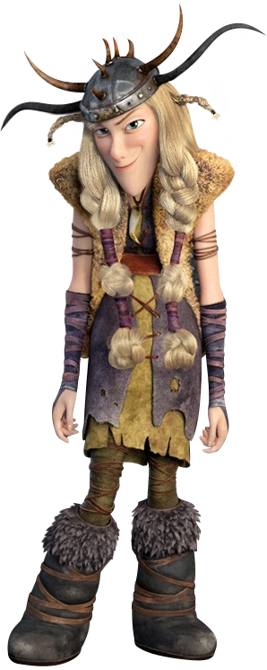

Le belliqueux des Dragonniers, dresseur de Crochefer
| Rôle | Dragonnier |
| Affiliation | Tribu de Beurk |
| Dragon | Crochefer (Cauchemar Monstrueux) |
| Particularité | Tempérament belliqueux, confiance excessive |
Kognedur est le fanfaron de l'équipe. Toujours prêt à se battre et convaincu qu'il est le meilleur, il est souvent source de conflits internes. Son Cauchemar Monstrueux Crochefer partage son caractère de feu. Malgré ses défauts, Kognedur est un combattant redoutable et un loyal allié quand les choses sérieuses commencent.